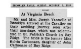

Ignazia Carbonaro
29 July 1889 – December 1980
Quick Facts
Immediate Family
Parents
- Pasquale Carbonaro (reported 1865–unknown)
- Rosalie Moule
Spouses
- Salvatore Ciancimino (1879–1948)
Children
- Josephine Ciancimino (1913–unknown)
- Rosolia Cincimino (1919–2015)
- Pasquale Cincimino (1922–1993)
- Frances Cincimino (1910–unknown)
- Frances Cincimino (1910–unknown)
- Frances Ciancimino (1910–1973)
Siblings
Family Relationship Notes
Ancestry’s public profile names Pasquale Carbonaro and Rosalie Moule as Ignazia’s parents. A derivative SortedByName transcription of her SS-5/NUMIDENT record also names those parents, while giving birth dates 4 August 1889 and 29 July 1889 and birthplace “PALERNO, Italy.” The Ancestry profile gives 29 July 1889 in Palermo. Preserve the date/place transcription variation; neither original form was reviewed.
An Ancestry public result for Angelo Carbonaro reports birth 1 June 1887 in Palermo, death July 1978 in Brooklyn, and parents Pasquale Carbonaro and Rosalie Moule. A separate derivative transcription of Angelo’s December 1936 SS-5 gives the same date and father, mother Rosalia Mule, and birthplace “BLERMO, Italy.” These matching entries make Angelo a strongly supported child and likely sibling of Ignazia, though the original SS-5 and civil records were not reviewed.
On Family Tree Sites
Ancestry public Ignazia profile — Compiled profile; underlying records paywalled
FamilySearch census-index search — “Frances Cianeimino,” born 1911, New York City; no parents
Find a Grave search — No exact 1879–1948 match
Drive couple archive — Notes, source thumbnails and images
Pasquale CarbonaroGeneration VII parent profileRosalie MouleGeneration VII parent profileAncestry public Angelo Carbonaro search resultOne result gives Angelo born 1 June 1887 in Palermo, died July 1978 in Brooklyn, and parents Pasquale Carbonaro and Rosalie Moule; compiled same-name search result.Couple Folder
Life Timeline
29 July 1889 · Birth · age 0
The public Ancestry profile reports her birth in Palermo, Sicily. The original birth record has not been reviewed.
About 1910–1922 · Children reported · about ages 20–33
Her public Ancestry profile lists children with reported birth years of 1910, 1913, 1919, and 1922. The three overlapping Frances entries are preserved as separate unresolved identities rather than merged.
By 1948 · Salvatore’s death · about age 58–59
The Ancestry profile lists Salvatore Ciancimino (1879–1948) as her spouse. His reported death occurred in Brooklyn on 18 April 1948; the marriage date and original records have not been established.
December 1980 · Death · age 91
The public Ancestry profile reports her death in Brooklyn, New York. The exact day and burial place remain unknown.
Life Story
The public Ancestry profile reports Ignazia Carbonaro (29 July 1889, Palermo–December 1980, Brooklyn), names Pasquale Carbonaro and Rosalie Moule as her parents, and lists Salvatore Ciancimino (1879–1948) as spouse. It displays six child entries, including three Frances entries with overlapping names and dates. These are compiled-tree assignments; the original records have not yet been reviewed, and the Frances identities must remain separate until records resolve them.
Photo Gallery




Sources and Evidence
- Ancestry public Ignazia Carbonaro profile — Reports birth, death, parents, spouse and six child entries; underlying sources are not exposed.
- Ancestry public Salvatore Ciancimino results — The 1879 Sciacca/1948 Brooklyn result lists Salvadore Ciancimino and Antonina Marotta as parents; distinguish from same-name men.
- SortedByName Carbonaro index (derivative SS-5 transcription) — Angelo Carbonaro b. 1 Jun 1887 is transcribed with parents Pasquale Carbonaro and Rosalia Mule; sibling candidate only, original SS-5 not reviewed.
- FamilySearch 1950 census index search — Frances Cianeimino, born 1911 in New York City; no parents listed.
- Ancestry public Angelo Carbonaro search results — One listed Angelo matches birth 1 June 1887 in Palermo, death July 1978 in Brooklyn, and parents Pasquale Carbonaro and Rosalie Moule. Same-name search/compiled result; underlying original sources are not shown.
- SortedByName Carbonaro entries transcribed from SSA records (Angelo SS-5, Dec. 1936; Ignazia SS-5/NUMIDENT) — Angelo is transcribed as born 1 June 1887 in “BLERMO, Italy,” parents Pasquale Carbonaro and Rosalia Mule. Ignazia is transcribed as born 4 August 1889 / 29 July 1889 in “PALERNO, Italy,” parents Pasquale Carbonaro and Rosalie Moule. Derivative transcription; original SS-5/NUMIDENT not inspected.
Research Notes and Open Questions
- Ancestry public tree explicitly names Pasquale Carbonaro and Rosalie Moule as parents. Their new Generation VII profiles link back here. This is a tree-supported relationship, not original vital-record proof.
- Ancestry’s six child entries are Pasquale Cincimino (1922–1993), Rosolia Cincimino (1919–2015), Josephine Ciancimino (1913–unknown), two separate Frances Cincimino entries (1910–unknown), and Frances Ciancimino (1910–1973). Preserve the duplicate/conflicting Frances entries as separate people until records resolve them.
- Angelo Carbonaro b. 1 Jun 1887 is a likely sibling candidate from SortedByName’s transcription of an SS-5 naming Pasquale Carbonaro and Rosalia Mule. “BLERMO” is the transcription; Palermo is a possible correction, not silently substituted. The original SS-5 and spelling identity remain unchecked.
- FamilySearch 1950 index “Frances Cianeimino” is a name/year/place lead only, not proof of parents or identity as Gerald’s wife.
- The “similar people” list on Ancestry is not a sibling list; those names have not been linked.
- No verified individual portrait, grave marker, or original vital record was obtained for Ignazia. Six uncaptioned Ancestry thumbnails are preserved separately in her gallery as unidentified media previews.
- The derivative SS-5/NUMIDENT transcription also lists Ignazia’s birth as 4 August 1889 / 29 July 1889 in “PALERNO, Italy” and repeats parents Pasquale Carbonaro and Rosalie Moule. The Ancestry profile gives 29 July 1889 in Palermo. Keep the date and spelling/location discrepancy visible; original SSA form not reviewed.
- Ancestry’s public Angelo Carbonaro result reports birth 1 June 1887 in Palermo, death July 1978 in Brooklyn, and parents Pasquale Carbonaro and Rosalie Moule; the separate 1936 SS-5 transcription gives the same birth date/father but transcribes “Rosalia Mule” and “BLERMO, Italy.” This strongly supports Angelo as Ignazia’s sibling, but original record review is still needed; retain all variants.
DNA
No DNA matches linked.
Family Notes
No family-notes link is listed on this profile.
Created 16 November 2026 as an unproved research lead. No parentage claim is yet established by a primary record.